2026-10-06 · arXiv publication preparation
引用42件の実在確認と証拠
41固有文献・本文で使用する37キー。各文献の出版社ページ、原著者公開資料、または一次PDFの画像を保存し、取得元・取得時刻・SHA-256を添付。
著者名と引用修正を反映したarXiv用原稿に対応。証拠画像は先行点検時の原本を保持し、全件のハッシュを再確認した。古い「著者未確定」ZIPや未修正原稿を配布入口にはしない。外部文献の定理をすべて再証明したという意味ではない。
点検データ · 証拠一覧とハッシュ
abbe23a本文引用あり実在確認済み
SGD learning on neural networks: leap complexity and saddle-to-saddle dynamics
Abbe, Emmanuel and Boix-Adserà, Enric and Misiakiewicz, Theodor (2023)
書誌ページ
著者の姓 Boix-Adserà の綴り・ハイフンを修正済み。
原稿修正前の個別点検メモ
PMLR 195, 2552–2623 (2023)、3著者を照合。著者PDFは Enric Boix-Adserà、現行Bibは Enric Boix Adserà と表示。
SGDと情報・階層構造のGaussian-input toolkitの背景。著者名を Boix-Adserà の綴りに統一する小修正を推奨。
証拠画像を開く（1件）
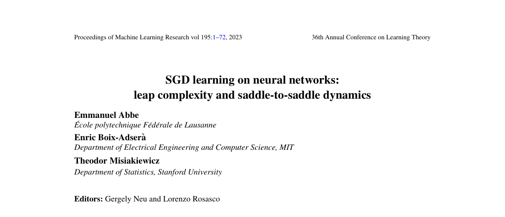
一次資料・取得元 · pdf-header · 2026-10-06T11:50:39.039257+00:00
SHA-256 7bf9bbe611c5644a41a0d031d67df9632a19e49f74b618e9d05dfdd6d318e76fambrosio2005gradient本文引用あり実在確認済み
Gradient flows: in metric spaces and in the space of probability measures
Ambrosio, Luigi and Gigli, Nicola and Savaré, Giuseppe (2005)
書誌ページ
一般的なWasserstein勾配流の背景として引用し、本稿固有のHessian分解の帰属を区別済み。
原稿修正前の個別点検メモ
Birkhäuserの初版2005年を確認。第2版2008年や電子公開年へ機械的に変更する必要はない。
WGFの一般的背景として適切。ただし本文02の H+H′ の具体的な二次変分式への「detailed properties」は箇所が曖昧。式に直接対応する Yamamoto et al. (2025), Proposition 3.2 / C.7 を併記し、AGSは一般背景に位置づけるとよい。AGS初版の該当定理番号は本点検では確定していない。
証拠画像を開く（1件）
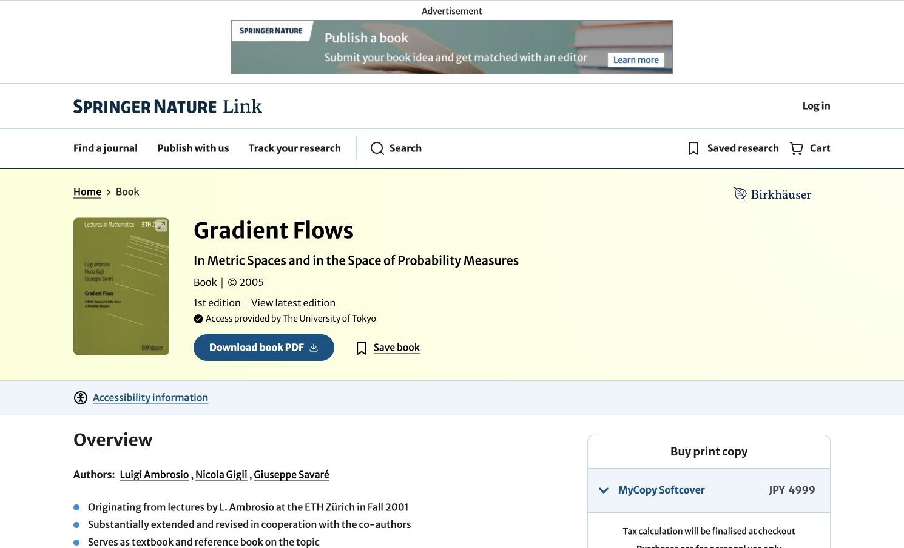
一次資料・取得元 · html-screenshot · 2026-10-06T11:48:00Z
SHA-256 576d7b989a3b3a0a9bc5899ba48fd0ea66d7173ef3b6f32ee41710a874d1d987anandkumar2014tensor本文引用あり実在確認済み
Tensor decompositions for learning latent variable models
Anandkumar, Animashree and Ge, Rong and Hsu, Daniel and Kakade, Sham M. and Telgarsky, Matus (2014)
書誌ページ
実在と書誌同一性を確認。個別の引用範囲については下の点検メモを参照。
原稿修正前の個別点検メモ
JMLR公式 15(80), 2773–2832 (2014)。5著者とPDF冒頭を照合。
潜在変数学習での観測モーメントとテンソル分解の関係を支持する背景引用。
証拠画像を開く（1件）
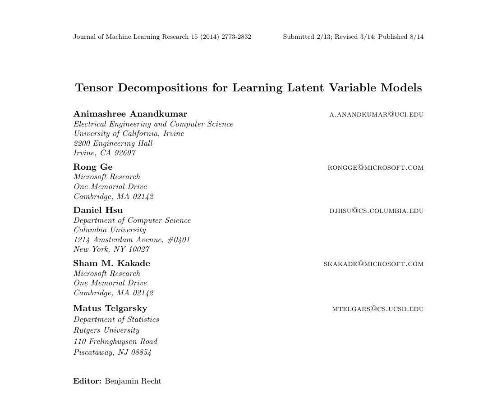
一次資料・取得元 · pdf-header · 2026-10-06T11:50:30.683030+00:00
SHA-256 90fb9c956abe55fd3cee822571ad6d59351c8777453bc43418518f5013e56c48arbel2019本文引用あり実在確認済み
Maximum Mean Discrepancy Gradient Flow
Arbel, Michael and Korba, Anna and SALIM, Adil and Gretton, Arthur (2019)
書誌ページ · 公式BibTeX
実在と書誌同一性を確認。個別の引用範囲については下の点検メモを参照。
原稿修正前の個別点検メモ
NeurIPS 32 (2019)、4著者・Maximum Mean Discrepancy Gradient Flowを確認。
MMDを用いる分布の勾配流・生成モデルという導入上の役割と一致。
証拠画像を開く（1件）
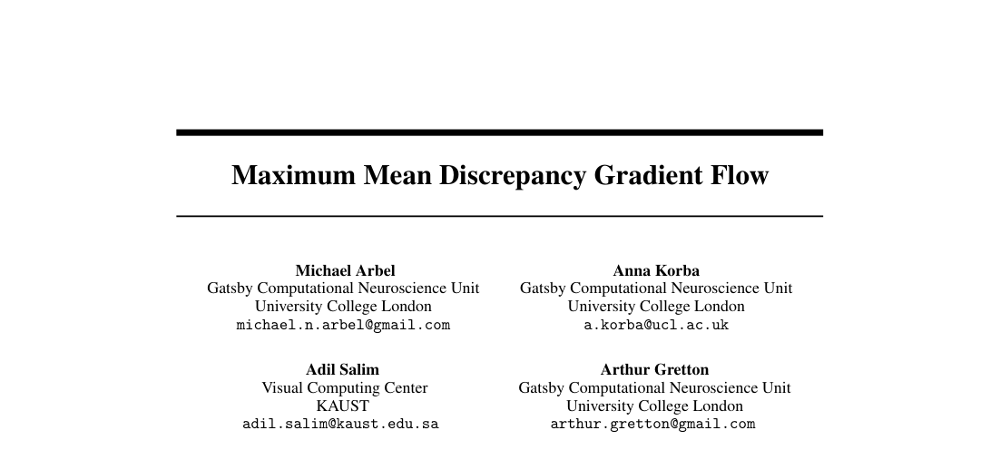
一次資料・取得元 · pdf-header · 2026-10-06T11:50:34.717288+00:00
SHA-256 0e31d4711426f1d2f5fb7412caabc66b600814d9e9d44328a97f6953ff7078bdarous2021online本文引用あり実在確認済み
Online stochastic gradient descent on non-convex losses from high-dimensional inference
Ben Arous, Gerard and Reza Gheissari and Aukosh Jagannath (2021)
書誌ページ
実在と書誌同一性を確認。個別の引用範囲については下の点検メモを参照。
原稿修正前の個別点検メモ
JMLR 22(106), 1–51 (2021)、Ben Arous / Gheissari / Jagannathを確認。
Gaussian-input/information exponentの最適化背景。本稿の固有のtensor展開定理をこの文献に帰していない。
証拠画像を開く（1件）
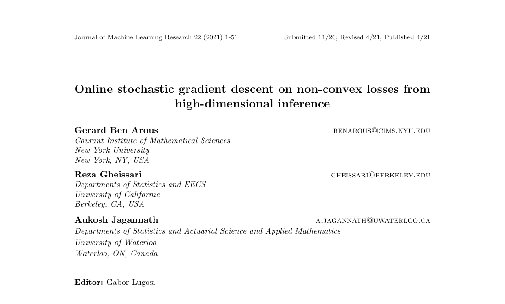
一次資料・取得元 · pdf-header · 2026-10-06T11:50:38.225662+00:00
SHA-256 c67423b2bf5d6c530dc2c1a59df4aadfd2f025ab1484d598aa91986fa3818c35BhojanapalliNeyshaburSrebro2016本文引用あり実在確認済み
Global Optimality of Local Search for Low Rank Matrix Recovery
Bhojanapalli, Srinadh and Neyshabur, Behnam and Srebro, Nathan (2016)
書誌ページ · 刊本目次 PDF p.29 · 公式BibTeX
実在と書誌同一性を確認。個別の引用範囲については下の点検メモを参照。
原稿修正前の個別点検メモ
NeurIPS 29 (2016)の公式論文・BibTeXを確認。Nati / Nathan Srebroは表示名の違い。公式BibTeXの頁は空欄だが、刊本の目次に開始3880頁、次論文3889頁があり、9頁の本文と3880–3888が整合する。
測定条件つき低ランク回復の局所最小・鞍点の背景。本稿も「適切な測定・rank条件の下で」と限定している。
証拠画像を開く（1件）
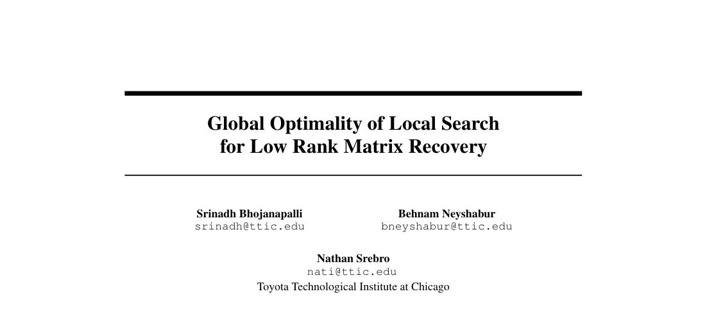
一次資料・取得元 · pdf-header · 2026-10-06T11:50:31.539097+00:00
SHA-256 bad6d5ebce36025ef73a7e9e83f77fa87cdc4eaeda1f33f6f246636a06f7d47ebietti2023本文引用あり実在確認済み
Learning single-index models with shallow neural networks
Bietti, Alberto and Bruna, Joan and Sanford, Clayton and Song, Min Jae (2022)
書誌ページ · 公式BibTeX
実在と書誌同一性を確認。個別の引用範囲については下の点検メモを参照。
原稿修正前の個別点検メモ
キー名は2023だがBibのyearは正しく2022。NeurIPS 35, 9768–9783 (2022)、4著者を確認。
Gaussian単一指数モデル・activationの最適化構造の背景として適切。キー名の改名は不要。
証拠画像を開く（1件）
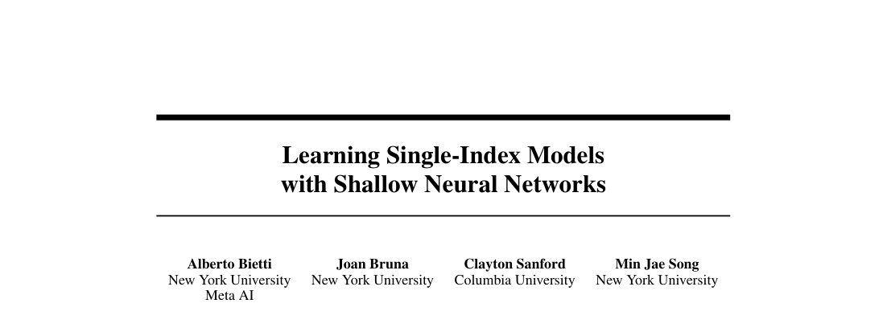
一次資料・取得元 · pdf-header · 2026-10-06T11:50:40.563567+00:00
SHA-256 8beb903e1c45a883278965fde46e8b756191109866f9da3243660d32f1023622BLM2013本文引用あり実在確認済み
Concentration Inequalities: A Nonasymptotic Theory of Independence
Stéphane Boucheron and Gábor Lugosi and Pascal Massart (2013)
書誌ページ · DOI
実在と書誌同一性を確認。個別の引用範囲については下の点検メモを参照。
原稿修正前の個別点検メモ
Oxford公式書籍ページで題名・3著者・2013年2月7日・ISBNを確認。
条件付きMcDiarmidとGaussian Lipschitz concentrationの教科書出典として適切。条件付け後の独立性・定数の使用は本稿自身の証明にも明示されている。個々の教科書定理番号の照合までは行っていない。
証拠画像を開く（1件）
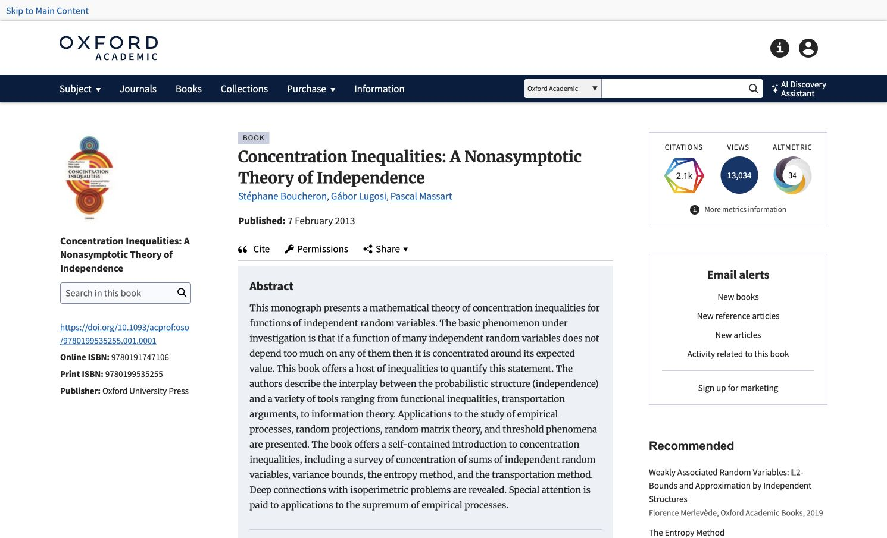
一次資料・取得元 · html-screenshot · 2026-10-06T12:00:39.623Z
SHA-256 c1baf4619f935b6bda58cedcfbfc64affed9ae96c2eeb4da656d6d65226123b2Boucheron2004未使用キー実在確認済み
Concentration Inequalities
Boucheron, Stéphane and Lugosi, Gábor and Bousquet, Olivier (2004)
書誌ページ · DOI
実在と書誌同一性を確認。個別の引用範囲については下の点検メモを参照。
原稿修正前の個別点検メモ
Springer章、2004年、LNAI 3176、208–240頁。出版社の著者順 Boucheron / Lugosi / Bousquet と一致。
現行本文では未使用。
証拠画像を開く（1件）
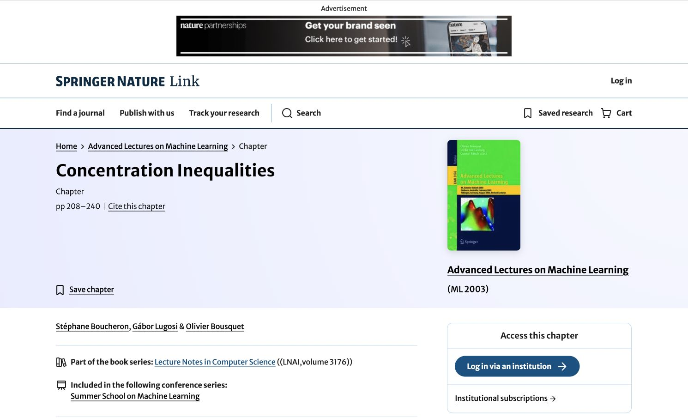
一次資料・取得元 · html-screenshot · 2026-10-06T11:52:45.097Z
SHA-256 0b3801bd1a2b2083be1714f455491e16c6b470020b5924f17ed4b61cbc4d609fchen2016wassersteinProduct本文引用あり実在確認済み
Stochastic control, entropic interpolation and gradient flows on Wasserstein product spaces
Yongxin Chen and Tryphon Georgiou and Michele Pavon (2016)
書誌ページ
実在と書誌同一性を確認。個別の引用範囲については下の点検メモを参照。
原稿修正前の個別点検メモ
arXiv:1601.04891、2016、Chen / Georgiou / Pavon、題名とPDFが一致。
原論文 Section IV がWasserstein product space上のgradient flowを直接扱い、本稿の背景文に適合。
証拠画像を開く（1件）
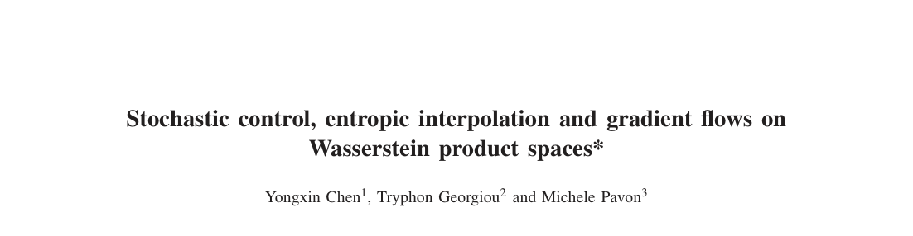
一次資料・取得元 · pdf-header · 2026-10-06T11:50:36.983938+00:00
SHA-256 798d4667c00c65c01fd5315f9a425214e5eba75efcac74fd212994725ab47ca0chen2025uniform本文引用あり実在確認済み
Uniform-in-time propagation of chaos for mean field Langevin dynamics
Chen, Fan and Ren, Zhenjie and Wang, Songbo (2025)
書誌ページ · 出版社 DOI · DOI
実在と書誌同一性を確認。個別の引用範囲については下の点検メモを参照。
原稿修正前の個別点検メモ
AIHP(B) 61(4), 2357–2404 (2025)、DOI 10.1214/24-AIHP1499と3著者（Fan Chen / Zhenjie Ren / Songbo Wang）を確認。arXiv初版2022ではなく出版年2025で引用している。
mean-field Langevinのuniform-in-time propagation of chaosという引用目的と一致。
証拠画像を開く（1件）
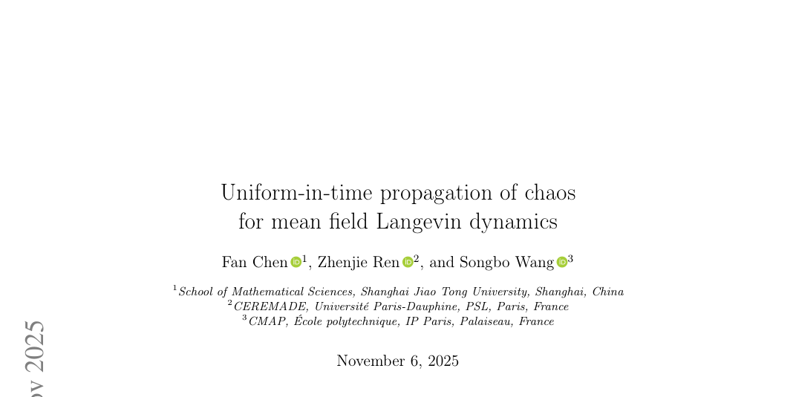
一次資料・取得元 · pdf-header · 2026-10-06T11:54:51.180124+00:00
SHA-256 96e960258361a6a5e5707518af1604e768e62c178f7d4e7dd023a7923c7bc538chizat2018本文引用あり実在確認済み
On the Global Convergence of Gradient Descent for Over-parameterized Models using Optimal Transport
Chizat, Lénaïc and Bach, Francis (2018)
書誌ページ · 公式BibTeX
実在と書誌同一性を確認。個別の引用範囲については下の点検メモを参照。
原稿修正前の個別点検メモ
NeurIPS 31 (2018)、Chizat / Bachと公式書誌が一致。再ビルドPDFで Lénaïc のアクセントが正しく表示されることも確認。
最適輸送による過剰パラメータモデルの勾配降下・mean-field記述という役割と一致。
証拠画像を開く（1件）
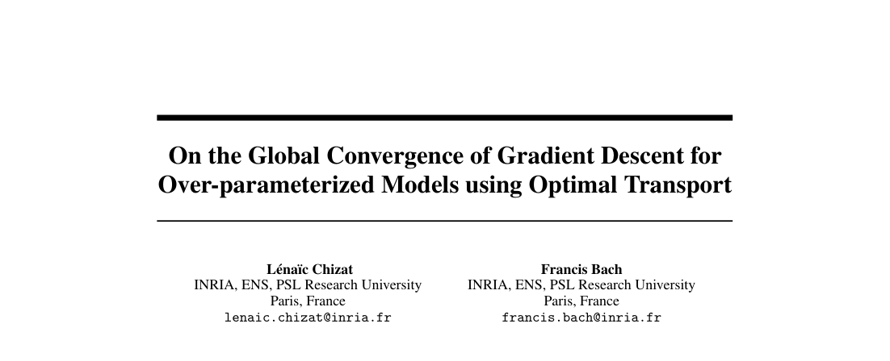
一次資料・取得元 · pdf-header · 2026-10-06T11:50:36.516819+00:00
SHA-256 a6770811580e019d15e450b9461c25163120970e1cf58d2319f8fde951aeff1echu2019pfd本文引用あり実在確認済み
Probability Functional Descent: A Unifying Perspective on GANs, Variational Inference, and Reinforcement Learning
Chu, Casey and Blanchet, Jose and Glynn, Peter (2019)
書誌ページ
実在と書誌同一性を確認。個別の引用範囲については下の点検メモを参照。
原稿修正前の個別点検メモ
PMLR 97, 1213–1222 (2019)、3著者を確認。
GAN・変分推論などを確率汎関数の降下で統一して見る背景として適切。
証拠画像を開く（1件）
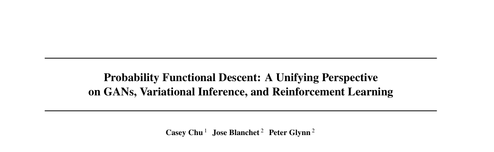
一次資料・取得元 · pdf-header · 2026-10-06T11:50:34.347650+00:00
SHA-256 a8686a522d882ce86079a99c967cd0335068a760764f74be7408ac1ec0897bf7conger2025coupled本文引用あり実在確認済み
Coupled Wasserstein Gradient Flows for Min-Max and Cooperative Games
Lauren Conger and Franca Hoffmann and Eric Mazumdar and Lillian J. Ratliff (2025)
書誌ページ
実在と書誌同一性を確認。個別の引用範囲については下の点検メモを参照。
原稿修正前の個別点検メモ
arXiv:2411.07403、4著者。初版2024年11月、参照版v2は2025年2月10日。2025年表記は版に対応している。
coupled Wassersteinのmin-max/cooperative系という背景に一致。版年を明確にするならarXiv v2を指定できる。
証拠画像を開く（1件）
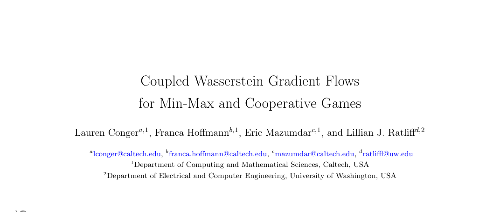
一次資料・取得元 · pdf-header · 2026-10-06T11:50:37.256565+00:00
SHA-256 cfc1dcb63b5603841163edbceb837dea8ab2a8c9f941391de623a6d329ad44c9daniely2016toward本文引用あり実在確認済み
Toward Deeper Understanding of Neural Networks: The Power of Initialization and a Dual View on Expressivity
Daniely, Amit and Frostig, Roy and Singer, Yoram (2016)
書誌ページ · 公式BibTeX
実在と書誌同一性を確認。個別の引用範囲については下の点検メモを参照。
原稿修正前の個別点検メモ
NeurIPS 29 (2016)、3著者と題名を確認。
Gaussian activationのHermite係数とkernel表現の背景として適切。
証拠画像を開く（1件）
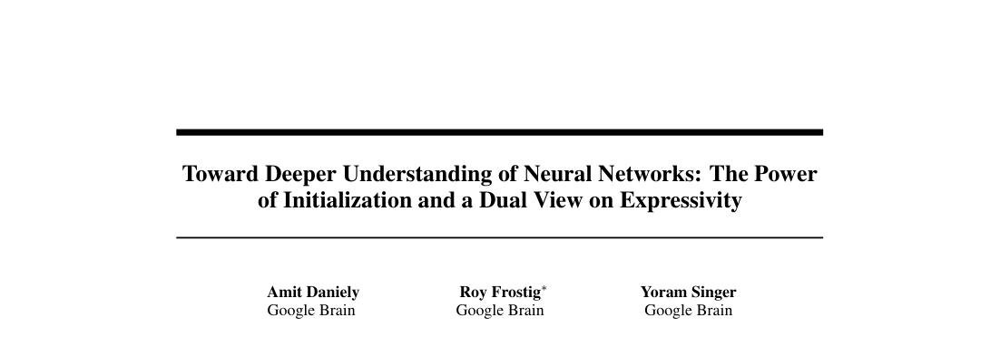
一次資料・取得元 · pdf-header · 2026-10-06T11:50:38.854943+00:00
SHA-256 75e419a535454a0a9aa151c4827136a1e4751d09d507ec870eab2522901c7836fournier2015rate本文引用あり実在確認済み
On the rate of convergence in Wasserstein distance of the empirical measure
Fournier, Nicolas and Guillin, Arnaud (2015)
書誌ページ · DOI
実在と書誌同一性を確認。個別の引用範囲については下の点検メモを参照。
原稿修正前の個別点検メモ
Probability Theory and Related Fields 162(3–4), 707–738 (2015)、2著者を確認。オンライン2014とは区別。
経験測度の収束速度の背景として明記されている。本稿の重み付き特徴・全時間条件付き集中をこの論文だけから推論していない。
証拠画像を開く（1件）
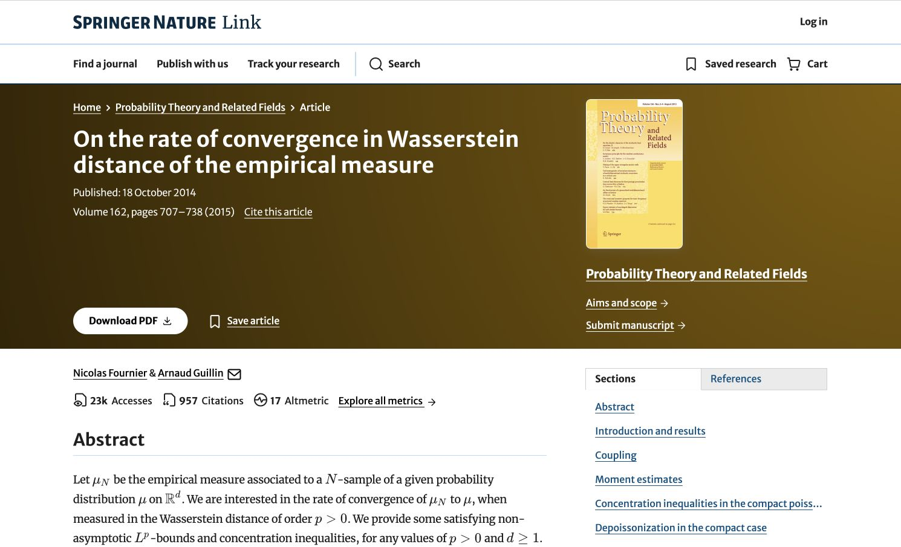
一次資料・取得元 · html-screenshot · 2026-10-06T11:55:19.249Z
SHA-256 7c4156df6186ffe626bf948e79db6f5b0a8fdb0e4e2183a1adea22db8ae5fbcbge2015未使用キー実在確認済み
Escaping From Saddle Points --- Online Stochastic Gradient for Tensor Decomposition
Ge, Rong and Huang, Furong and Jin, Chi and Yuan, Yang (2015)
書誌ページ
実在と書誌同一性を確認。個別の引用範囲については下の点検メモを参照。
原稿修正前の個別点検メモ
GeHuangJinYuan2015と同じPMLR論文を指す重複レコード。文献そのものは実在。
このキーは未引用なのでPDFの参考文献に重複印刷はない。未使用キーの整理は任意。
証拠画像を開く（1件）
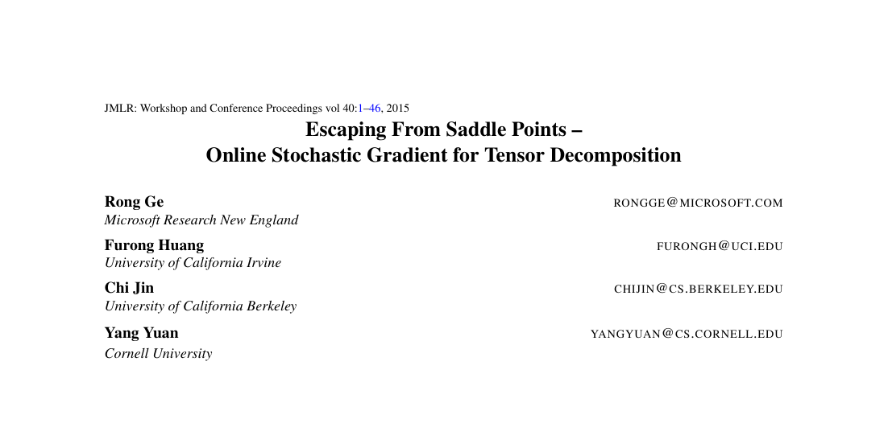
一次資料・取得元 · pdf-header · 2026-10-06T11:50:34.601903+00:00
SHA-256 1f297b37b269b804e3f4e2d0b15158d8cd0235921daff546904e8ef7544c457cGeHuangJinYuan2015本文引用あり実在確認済み
Escaping From Saddle Points---Online Stochastic Gradient for Tensor Decomposition
Ge, Rong and Huang, Furong and Jin, Chi and Yuan, Yang (2015)
書誌ページ
実在と書誌同一性を確認。個別の引用範囲については下の点検メモを参照。
原稿修正前の個別点検メモ
PMLR 40, 797–842 (2015)、4著者・題名を公式書誌と照合。
strict-saddleと摂動を伴う最適化の動機づけ。直交テンソル分解への言及も原論文の対象内。
証拠画像を開く（1件）
 一次資料・取得元 · pdf-header · 2026-10-06T11:50:31.445781+00:00
一次資料・取得元 · pdf-header · 2026-10-06T11:50:31.445781+00:00
SHA-256 1f297b37b269b804e3f4e2d0b15158d8cd0235921daff546904e8ef7544c457cGeJinZheng2017本文引用あり実在確認済み
No Spurious Local Minima in Nonconvex Low Rank Problems: A Unified Geometric Analysis
Ge, Rong and Jin, Chi and Zheng, Yi (2017)
書誌ページ
実在と書誌同一性を確認。個別の引用範囲については下の点検メモを参照。
原稿修正前の個別点検メモ
PMLR 70, 1233–1242 (2017)を公式書誌と照合。
低ランク問題の幾何の背景。一般の非凸問題すべてに結論を拡張していない。
証拠画像を開く（1件）
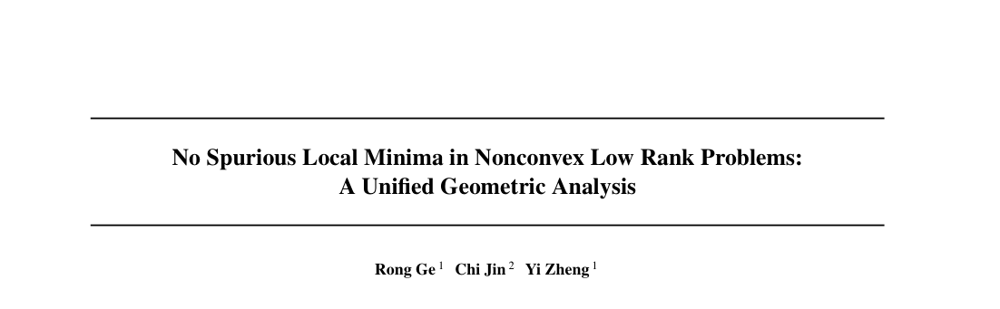
一次資料・取得元 · pdf-header · 2026-10-06T11:50:32.212940+00:00
SHA-256 d2d3edab6daeab916fc5685b504e77875a7c0fab77f763b248e8e215e07420eagiunta2024weaklynonlinear本文引用あり実在確認済み
Weakly nonlinear analysis of a two-species non-local advection–diffusion system
Valeria Giunta and Thomas Hillen and Mark A. Lewis and Jonathan R. Potts (2024)
書誌ページ · DOI
二種の非局所系のエネルギー構造に限定して引用し、一般のproduct-Wassersteinの参照とは区別済み。
原稿修正前の個別点検メモ
Nonlinear Analysis: Real World Applications 78, 104086 (2024)、4著者・DOIを確認。添付の著者preprintは2023年。
対称な相互作用係数を持つ2種系とenergy principleは本文pp.4–6にある。一方、product-Wassersteinの一般定理を直接提示する出典ではない。「多種PDEの例」としてChen/Congerと役割を分けるのが精密。
証拠画像を開く（1件）
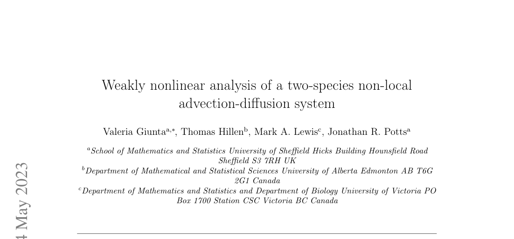
一次資料・取得元 · pdf-header · 2026-10-06T11:53:28.381845+00:00
SHA-256 19fe9ed789efb5e88b1b97c55d967a50535910ccdfa694da8bf8a266d93fe577glasgow2025meanfield本文引用あり実在確認済み
Mean-field analysis of polynomial-width two-layer neural network beyond finite time horizon
Glasgow, Margalit and Wu, Denny and Bruna, Joan (2025)
書誌ページ
実在と書誌同一性を確認。個別の引用範囲については下の点検メモを参照。
原稿修正前の個別点検メモ
PMLR 291, 2461–2539 (2025)を公式HTMLで確認。著者提供PDFの vol ??? は出版社側の未置換箇所で、原稿の書誌の誤りではない。
近い直接先行研究。原論文導入でprojected dynamics、各粒子の局所Hessian、polynomial-time追跡を確認。本稿はHessian-induced Gaussian jumpsとの違いを明記している。
証拠画像を開く（2件）
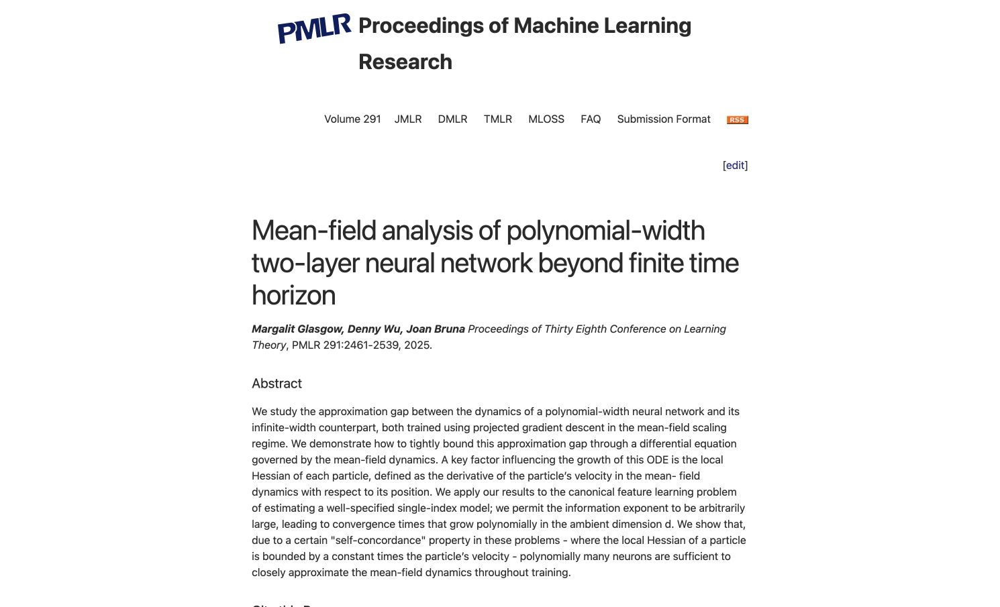
一次資料・取得元 · html-screenshot · 2026-10-06T12:10:37.305Z
SHA-256 d15acfafd68b1cb776b35c64eed7e4d2ef03b5e04aa3e85cc5a43475abcc9719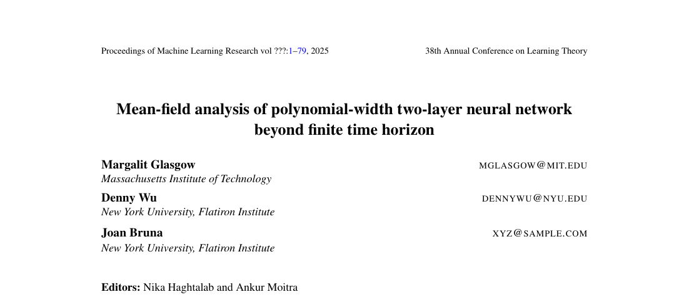
一次資料・取得元 · pdf-header · 2026-10-06T11:50:39.717021+00:00
SHA-256 6f3d4c7696190950ee48388a09347e58d318d9c3315b39eb10673d4199330859Hackbusch2012本文引用あり実在確認済み
Tensor Spaces and Numerical Tensor Calculus
Hackbusch, Wolfgang (2012)
書誌ページ
実在と書誌同一性を確認。個別の引用範囲については下の点検メモを参照。
原稿修正前の個別点検メモ
Springer Series in Computational Mathematics 42、初版2012、著者とDOIを確認。
テンソル空間の標準記法の背景引用。
証拠画像を開く（1件）
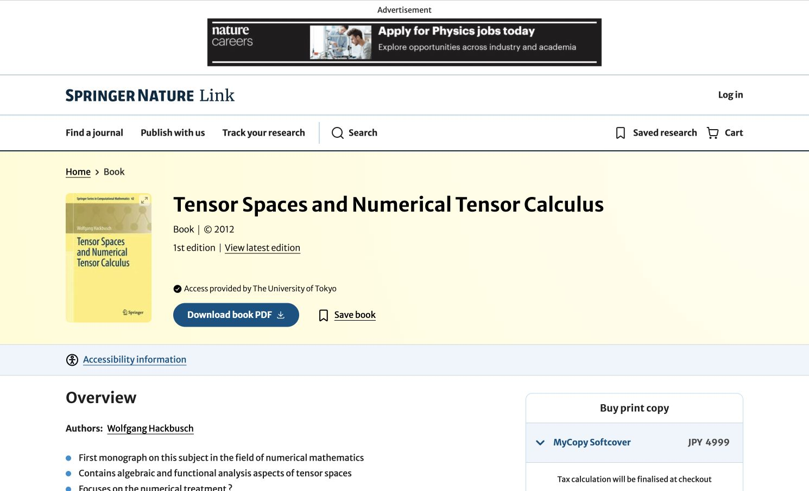
一次資料・取得元 · html-screenshot · 2026-10-06T11:51:32.966Z
SHA-256 084a419e19186cb20801197eaf0a1e67bbf8c69ba42a85fe8cd1f3cfee3f0f76jordan1998本文引用あり実在確認済み
The Variational Formulation of the Fokker--Planck Equation
Jordan, Richard and Kinderlehrer, David and Otto, Felix (1998)
書誌ページ · DOI
実在と書誌同一性を確認。個別の引用範囲については下の点検メモを参照。
原稿修正前の個別点検メモ
SIAM J. Math. Anal. 29(1), 1–17 (1998)。出版社の後年の電子公開日2006を巻号年と混同しない。
Fokker–Planck方程式の変分・Wasserstein構造の原典として適切。
証拠画像を開く（1件）
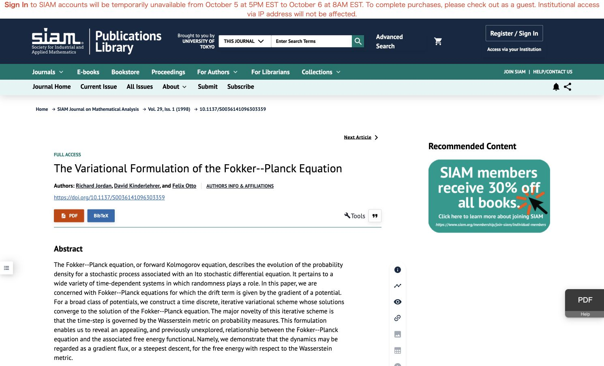
一次資料・取得元 · html-screenshot · 2026-10-06T11:59:02.836Z
SHA-256 0ca5a4c44373034b4011501cd6a927aa3a1ce1bd38917a646c3f7df0acd26f10kim2024nonlinear本文引用あり実在確認済み
Transformers Learn Nonlinear Features In Context: Nonconvex Mean-field Dynamics on the Attention Landscape
Kim, Juno and Suzuki, Taiji (2024)
書誌ページ
実在と書誌同一性を確認。個別の引用範囲については下の点検メモを参照。
原稿修正前の個別点検メモ
PMLR 235, 24527–24561 (2024)、Kim / Suzukiを確認。
attentionの非線形mean-field地形の二次構造という背景に対応。
証拠画像を開く（1件）
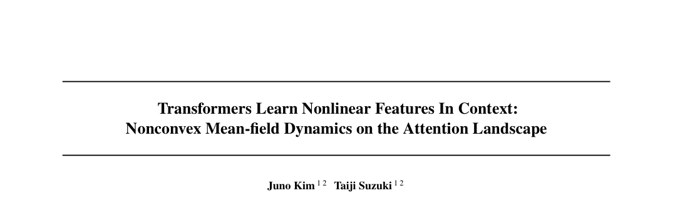
一次資料・取得元 · pdf-header · 2026-10-06T11:50:36.381001+00:00
SHA-256 d5b51b0d14a61c0e65b8651f3cc0f856f0f443112977670c224aabeeb8a3bbbbkolda2009tensor本文引用あり実在確認済み
Tensor Decompositions and Applications
Kolda, Tamara G. and Bader, Brett W. (2009)
書誌ページ · 著者の正式出版ページ · DOI
実在と書誌同一性を確認。個別の引用範囲については下の点検メモを参照。
原稿修正前の個別点検メモ
SIAM Review 51(3), 455–500 (2009)、DOIと著者公開PDFが一致。
行列・テンソル分解の背景として使用され、WGFについての定理をこのsurveyに帰していない。
証拠画像を開く（1件）
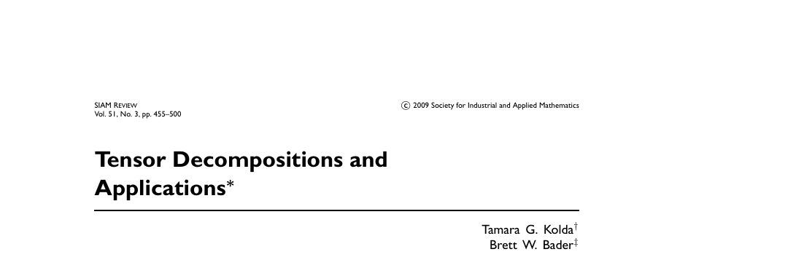
一次資料・取得元 · pdf-header · 2026-10-06T11:54:51.893548+00:00
SHA-256 b4eadf23e70e7ecf0bbc577a20f7ea829f28d23275ae8b54b37ec4c8a875bdf5Ledoux1999未使用キー実在確認済み
Concentration of Measure and Logarithmic Sobolev Inequalities
Michel Ledoux (1999)
書誌ページ · DOI
実在と書誌同一性を確認。個別の引用範囲については下の点検メモを参照。
原稿修正前の個別点検メモ
Séminaire de Probabilités XXXIII / LNM 1709、120–216頁、1999。NUMDAMの原本表紙にも年・頁がある。
現行本文では未使用。
証拠画像を開く（1件）
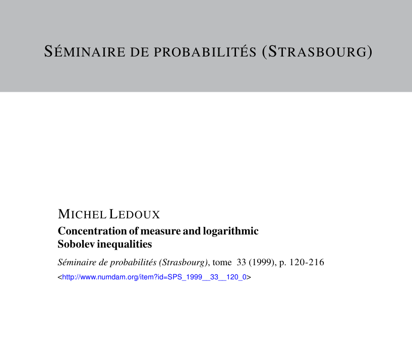
一次資料・取得元 · pdf-header · 2026-10-06T11:50:33.273084+00:00
SHA-256 9cf659ddafe5e9395a5a4ca350e1978f6dbff52ce6ece06ad89db53e3473c320Ledoux2001未使用キー実在確認済み
The Concentration of Measure Phenomenon
Michel Ledoux (2001)
書誌ページ · DOI
実在と書誌同一性を確認。個別の引用範囲については下の点検メモを参照。
原稿修正前の個別点検メモ
AMS Mathematical Surveys and Monographs 89。出版社の巻の年2001を確認。記載ISBNは後年の版にも対応し、DOI登録の2005年だけで初版年を誤記とはしない。
現行本文では未使用。
証拠画像を開く（2件）
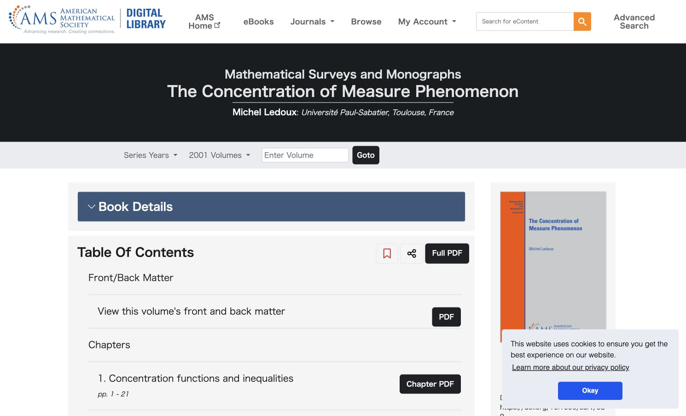
一次資料・取得元 · html-screenshot · 2026-10-06T12:01:05.818Z
SHA-256 e497160543fae2b4454f155c3c88c76ded18cf0c1ed6d1c17cd3bfa064916010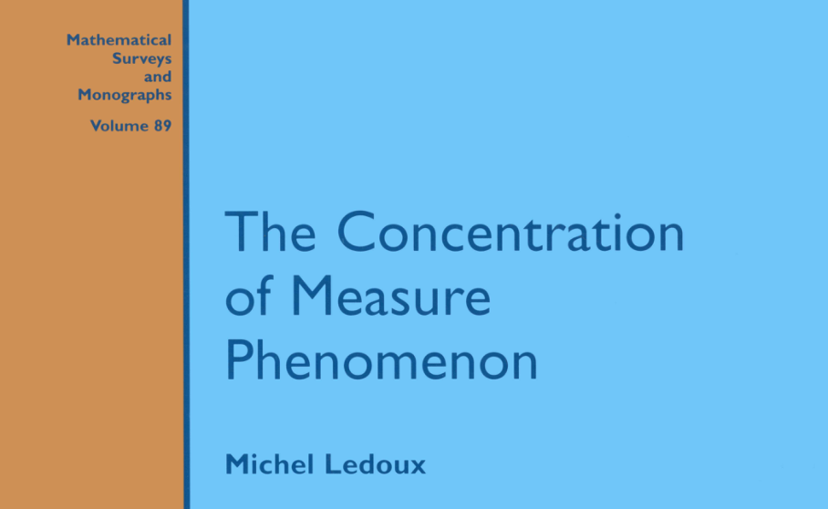
一次資料・取得元 · pdf-header · 2026-10-06T11:50:33.639945+00:00
SHA-256 d718564940dfc3958b31ae8fc95c7ffdebdb0681a76d06166f088698d7d5479aliu2016本文引用あり実在確認済み
Stein Variational Gradient Descent: A General Purpose Bayesian Inference Algorithm
Liu, Qiang and Wang, Dilin (2016)
書誌ページ · 公式BibTeX
SVGDを通常のWGFと区別した記述へ修正済み。
原稿修正前の個別点検メモ
NeurIPS 29 (2016)、Liu / Wang、題名とPDFを確認。
粒子変分推論の背景として適切。ただしSVGDの場はRKHSに制限されたStein変分構成。導入の表現を「関連する粒子変分法」とすれば、すべてが通常の2-WGFであるという読み違いを避けられる。
証拠画像を開く（1件）
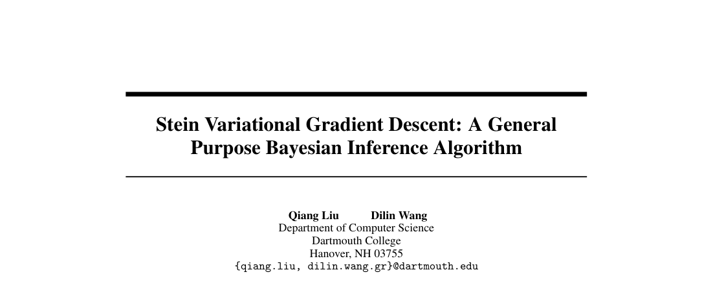
一次資料・取得元 · pdf-header · 2026-10-06T11:50:34.262509+00:00
SHA-256 f7d7ee23d46c0fb896b8a6345eb82bca78b1e69b4771e1fa4e62d90c0cf697aemasarotto2019procrustes本文引用あり実在確認済み
Procrustes Metrics on Covariance Operators and Optimal Transportation of Gaussian Processes
Valentina Masarotto and Victor M. Panaretos and Yoav Zemel (2019)
書誌ページ · DOI
実在と書誌同一性を確認。個別の引用範囲については下の点検メモを参照。
原稿修正前の個別点検メモ
Sankhya A 81(1), 172–213 (2019)。オンライン2018と巻号2019を区別。
Gaussian covarianceのProcrustes/Wasserstein比較を支持。本稿のpopulation-first結合と条件付き独立性は独自の証明として分けられており、先行論文に帰していない。
証拠画像を開く（1件）
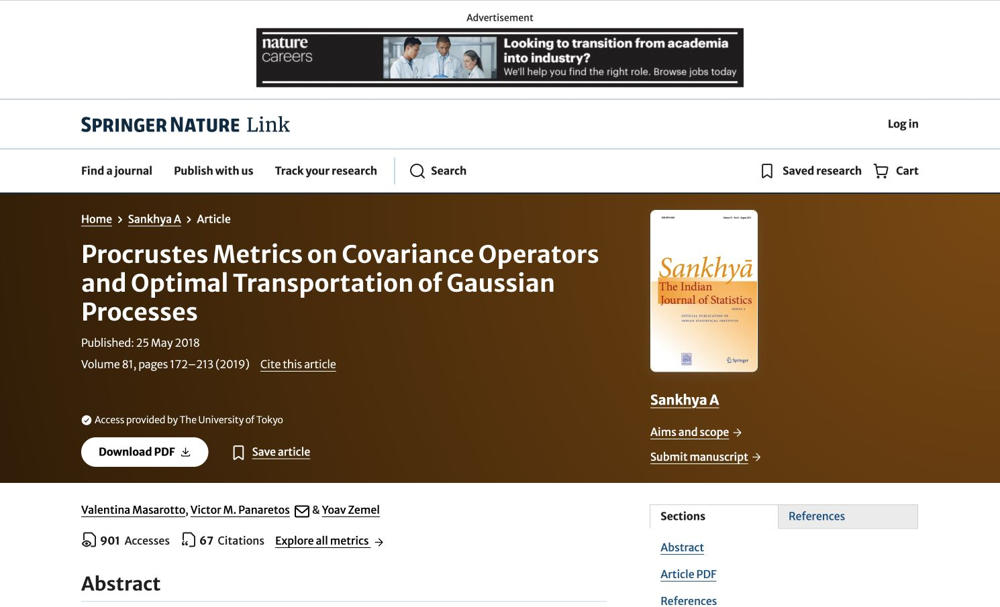
一次資料・取得元 · html-screenshot · 2026-10-06T11:54:56.993Z
SHA-256 77c72a34f9e9b3187c5685bce5bae22c1c3ceda9aa147d2722f0abf54f31e776murray2023characterizing本文引用あり実在確認済み
Characterizing the spectrum of the NTK via a power series expansion
Michael Murray and Hui Jin and Benjamin Bowman and Guido Montufar (2023)
書誌ページ · 採録稿（NSF）
実在と書誌同一性を確認。個別の引用範囲については下の点検メモを参照。
原稿修正前の個別点検メモ
ICLR 2023、4著者。NSF公開の採録PDF冒頭にもICLR 2023とある。arXiv初版2022との違いを確認。
NTKスペクトルとpower series / activation係数の関係の背景として適切。
証拠画像を開く（1件）
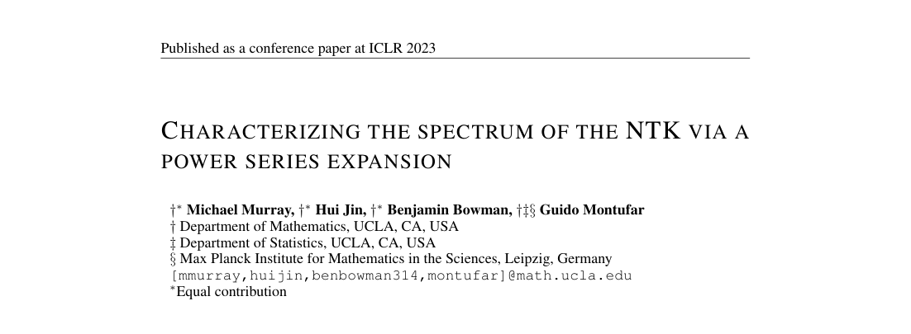
一次資料・取得元 · pdf-header · 2026-10-06T11:54:55.029920+00:00
SHA-256 d2d9287c55aded449d625a6b8800e543bb5187b0891d741d8bf379026c490f8anitanda2022convex本文引用あり実在確認済み
Convex Analysis of the Mean Field Langevin Dynamics
Nitanda, Atsushi and Wu, Denny and Suzuki, Taiji (2022)
書誌ページ
実在と書誌同一性を確認。個別の引用範囲については下の点検メモを参照。
原稿修正前の個別点検メモ
PMLR 151, 9741–9757 (2022)、3著者・題名を確認。
mean-field Langevin力学の凸解析という導入・MF背景に一致。
証拠画像を開く（1件）
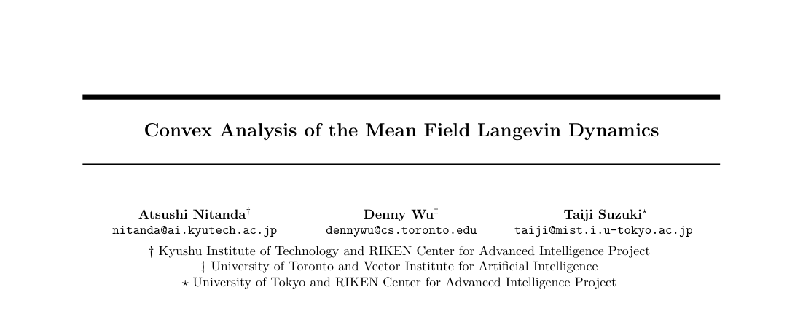
一次資料・取得元 · pdf-header · 2026-10-06T11:50:35.425754+00:00
SHA-256 0c985cd1f62a034888ef2e0fcaeb3ba9dbcf16c36154c63235f2b841fe8c476enitanda2022pda本文引用あり実在確認済み
Particle dual averaging: optimization of mean field neural network with global convergence rate analysis
Nitanda, Atsushi and Wu, Denny and Suzuki, Taiji (2022)
書誌ページ · DOI
題名末尾の脚注記号を除去済み。本文では大域収束の出典として独立させ、propagation of chaos の根拠と区別した。
原稿修正前の個別点検メモ
J. Stat. Mech. 2022(11), 114010、2022年11月24日、3著者・DOIを確認。タイトル末尾の * は出版社ページで上付き注記。
大域収束率を持つ粒子法の例として適切。伝播の混沌の全主張をPDA論文単独に帰さず、他の3引用と役割を分けると明確。Bibのタイトルに残る通常文字の * は除去候補。
証拠画像を開く（2件）
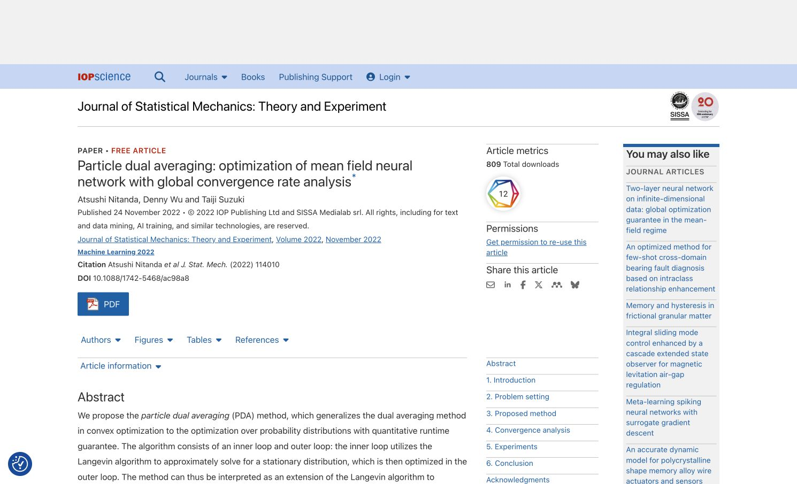
一次資料・取得元 · html-screenshot · 2026-10-06T12:01:41.401Z
SHA-256 a8b6ebc424b5ce16eb9eacc0460555ab78144a57de128b42624126b7f38b6550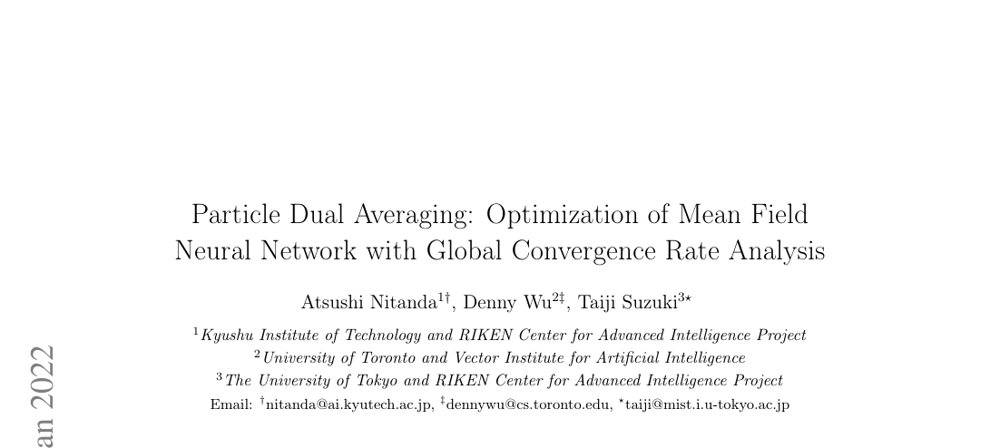
一次資料・取得元 · pdf-header · 2026-10-06T11:54:50.382294+00:00
SHA-256 f9221cff08feb09577ab8713f74b66c2088f958896bf6837deb5323b7f01068enitanda2025propagationensemble本文引用あり実在確認済み
Propagation of Chaos for Mean-Field Langevin Dynamics and its Application to Model Ensemble
Nitanda, Atsushi and Lee, Anzelle and Kai, Damian Tan Xing and Sakaguchi, Mizuki and Suzuki, Taiji (2025)
書誌ページ
実在と書誌同一性を確認。個別の引用範囲については下の点検メモを参照。
原稿修正前の個別点検メモ
PMLR 267, 46586–46610 (2025)。著者表示 Damian Tan と公式書誌の Damian Tan Xing Kai の違いを確認。
mean-field Langevinとensemble近似のpropagation-of-chaos保証の例として適切。
証拠画像を開く（1件）
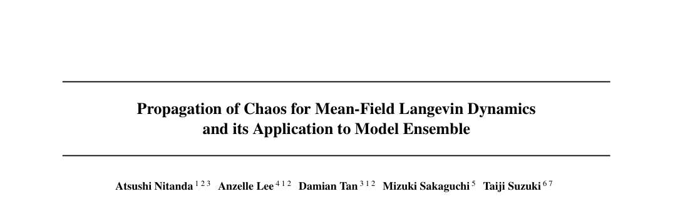
一次資料・取得元 · pdf-header · 2026-10-06T11:50:36.577862+00:00
SHA-256 25b0f2774eac8cd8da8d88ca14f3fc29fb9a172b2cd40befaddabc99188209dfpeccati2011wiener本文引用あり実在確認済み
Wiener Chaos: Moments, Cumulants and Diagrams: A survey with computer implementation
Peccati, Giovanni and Taqqu, Murad S (2011)
書誌ページ · DOI
実在と書誌同一性を確認。個別の引用範囲については下の点検メモを参照。
原稿修正前の個別点検メモ
Springer/Bocconi 1、©2011。電子版2011と先行する印刷版公開日を区別。題名・2著者が一致。
Hermite/chaosの背景として適切。引用する Chapters 1–7 は存在する。積公式の直接の案内は Chapter 6 “Multiplication Formulae” とすると読み手が追いやすい。
証拠画像を開く（1件）
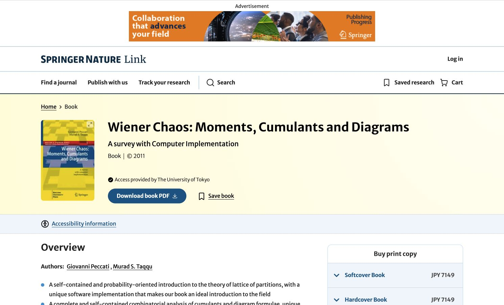
一次資料・取得元 · html-screenshot · 2026-10-06T11:51:06.961Z
SHA-256 0b489addd0ac57b179cd18f3718aa524e22e193b4e9a121b755665dc117a8e76pmlr-v75-jin18a本文引用あり実在確認済み
Accelerated Gradient Descent Escapes Saddle Points Faster than Gradient Descent
Jin, Chi and Netrapalli, Praneeth and Jordan, Michael I. (2018)
書誌ページ
実在と書誌同一性を確認。個別の引用範囲については下の点検メモを参照。
原稿修正前の個別点検メモ
PMLR 75, 1042–1085 (2018)、Jin / Netrapalli / Jordanを確認。
有限次元で鞍点を脱する摂動最適化の背景として適切。
証拠画像を開く（1件）
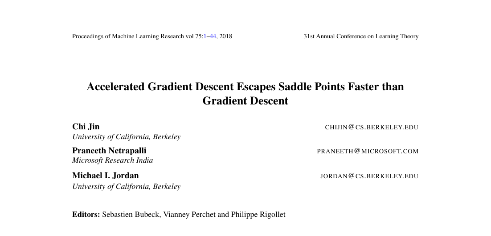
一次資料・取得元 · pdf-header · 2026-10-06T11:50:35.041596+00:00
SHA-256 7ff2fb4a634eee51ef577735c3cc4f9ee814b2fe418ddd85b69ca5c97a4e401epowers1970free本文引用あり実在確認済み
Free states of the canonical anticommutation relations
Powers, Robert T. and Størmer, Erling (1970)
書誌ページ · DOI
実在と書誌同一性を確認。個別の引用範囲については下の点検メモを参照。
原稿修正前の個別点検メモ
Commun. Math. Phys. 16(1), 1–33 (1970)、Powers / Størmer・DOIを出版社で確認。
本稿はPowers–Størmer不等式の有限次元計算をその場で証明する。原典の定理番号・全文証明の再監査まではしていない。
証拠画像を開く（1件）
一次資料・取得元 · html-screenshot · 2026-10-06T11:55:35.862Z
SHA-256 c38cf72e7a85d4ff49f5169fc0773b575653c86e300f0a7e44da7926a4a7ae4esidiropoulos2017tensor本文引用あり実在確認済み
Tensor Decomposition for Signal Processing and Machine Learning
Sidiropoulos, Nicholas D. and De Lathauwer, Lieven and Fu, Xiao and Huang, Kejun and Papalexakis, Evangelos E. and Faloutsos, Christos (2017)
書誌ページ · DOI
実在と書誌同一性を確認。個別の引用範囲については下の点検メモを参照。
原稿修正前の個別点検メモ
IEEE TSP 65(13), 3551–3582 (2017)、DOIの出版社登録と6著者を照合。添付画像は2016年の著者preprintで、出版年とは別。
信号処理・機械学習におけるテンソル分解のsurveyとして適切。
証拠画像を開く（1件）
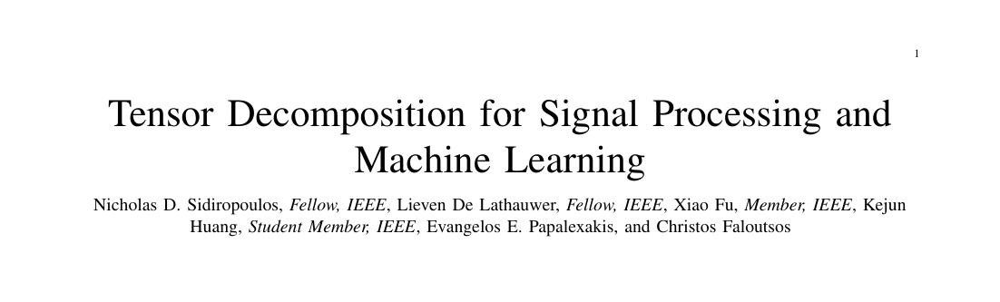
一次資料・取得元 · pdf-header · 2026-10-06T11:53:28.382817+00:00
SHA-256 4c3c4d4d06b9ab163617f65710a9342be43f4785a6afbbc7800ce6b2b5ef982esongmei2018本文引用あり実在確認済み
A mean field view of the landscape of two-layer neural networks
Song Mei and Andrea Montanari and Phan-Minh Nguyen (2018)
書誌ページ · DOI
実在と書誌同一性を確認。個別の引用範囲については下の点検メモを参照。
原稿修正前の個別点検メモ
PNAS 115(33), E7665–E7671 (2018)、3著者・DOIを照合。preprintとjournalで Two-Layers / Two-Layer の表題差がある。
2層ニューラルネットのmean-field地形・力学の背景として適切。
証拠画像を開く（1件）
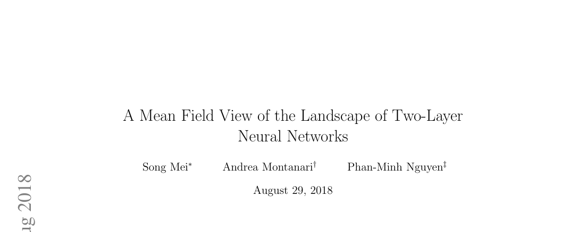
一次資料・取得元 · pdf-header · 2026-10-06T11:54:49.978018+00:00
SHA-256 4304a287d2542161557ded84bf2a00917966af8599c636bc1e1ac39481c32b3csuzuki2023uniformintime本文引用あり実在確認済み
Uniform-in-time propagation of chaos for the mean-field gradient Langevin dynamics
Taiji Suzuki and Atsushi Nitanda and Denny Wu (2023)
書誌ページ · ICLR 2023公式ポスター
実在と書誌同一性を確認。個別の引用範囲については下の点検メモを参照。
原稿修正前の個別点検メモ
ICLR公式2023ポスターページに題名・3著者・同じOpenReview IDがある。OpenReviewの自動取得は制限されたため、公式大会ページを画像証拠にした。
mean-field gradient Langevinのuniform-in-time propagation of chaosを支持。
証拠画像を開く（1件）
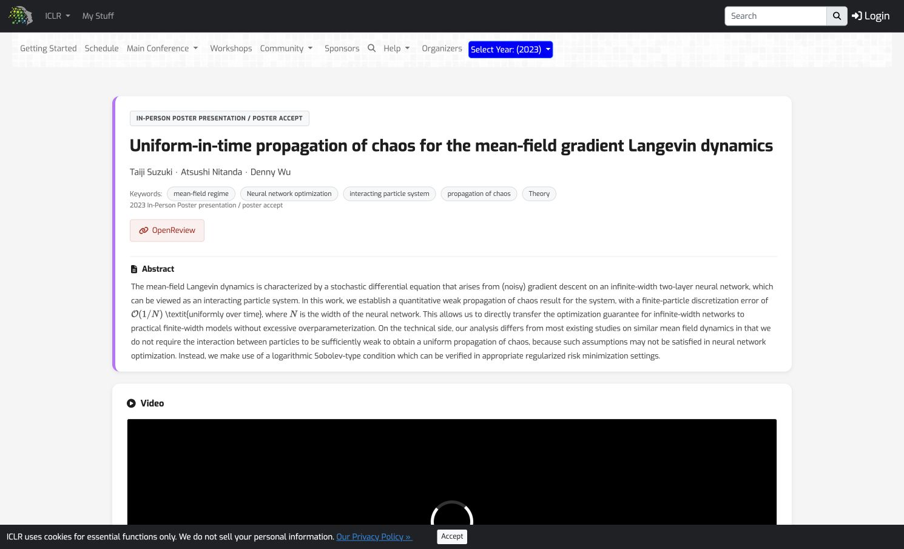
一次資料・取得元 · html-screenshot · 2026-10-06T11:58:45.002Z
SHA-256 63656e1b85f68973d785ebc531d614aafeda796c46a462c5a7a7a90060db124esznitman1991本文引用あり実在確認済み
Topics in propagation of chaos
Sznitman, Alain-Sol (1991)
書誌ページ · DOI
実在と書誌同一性を確認。個別の引用範囲については下の点検メモを参照。
原稿修正前の個別点検メモ
LNM 1464、165–251 (1991)、著者と章を確認。講義年1989・電子公開2006とは区別。
propagation of chaosおよび参照粒子結合の一般背景。本稿の条件付き共通場の構成を直接引用で済ませていない。
証拠画像を開く（2件）
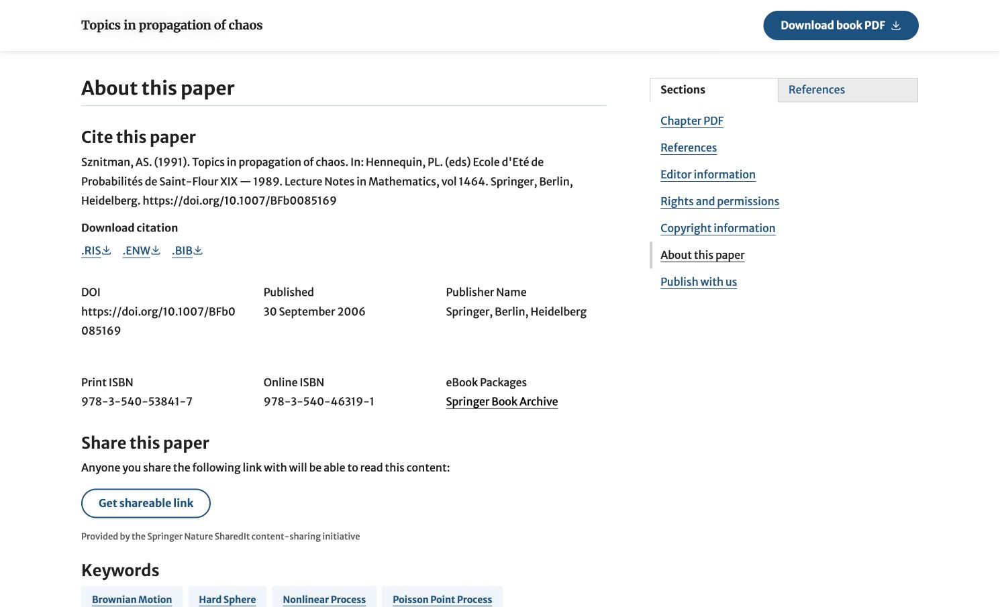
一次資料・取得元 · html-screenshot · 2026-10-06T11:54:12.480Z
SHA-256 649d8fc7956dfb48fb6f646683b5e4432fc81587dc16fdc1d1918615a54bc368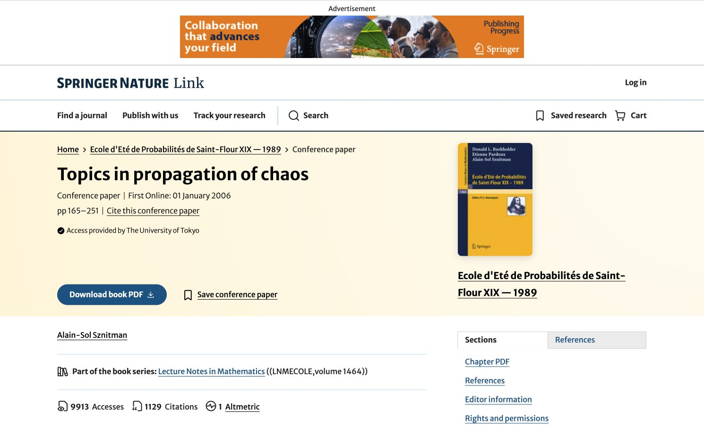
一次資料・取得元 · html-screenshot · 2026-10-06T11:53:49.005Z
SHA-256 eaf5463ceaca729ff807f3f776862f3c5cab945cb968c2308b9002b5218c0809tropp2012user未使用キー実在確認済み
User-friendly tail bounds for sums of random matrices
Tropp, Joel A (2012)
書誌ページ
実在と書誌同一性を確認。個別の引用範囲については下の点検メモを参照。
原稿修正前の個別点検メモ
Foundations of Computational Mathematics 12(4), 389–434 (2012)。オンライン公開2011年と巻号年2012年を区別。
現行本文では未使用。
証拠画像を開く（1件）
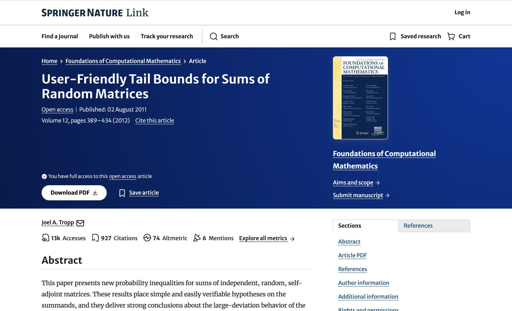
一次資料・取得元 · html-screenshot · 2026-10-06T11:53:36.165Z
SHA-256 abf06e6bc074a6b790551865e9059bcb974707a8f26423a0b4caf77d0acf4e5fyamamoto2025hessianguided本文引用あり実在確認済み
Hessian-guided Perturbed Wasserstein Gradient Flows for Escaping Saddle Points
Naoya Yamamoto and Juno Kim and Taiji Suzuki (2025)
書誌ページ · 公式BibTeX
正式な NeurIPS 2025 巻38・頁43347–43398・DOI 10.52202/085713-1442 を反映済み。具体的な第二変分には Proposition 3.2 / C.7 を帰属。
原稿修正前の個別点検メモ
NeurIPS 2025正式proceedings、Vol.38、43347–43398頁、DOI 10.52202/085713-1442を確認。現行のarXivリンクでも実在するが正式掲載情報を補うとよい。
重要な直接先行研究。原論文PDFで Proposition 3.2 の H+H′、式(11)のH²共分散、Assumption 2 / (8)、Algorithm 1、Proposition G.1を確認。本稿は共通固定時刻と適応時刻を区別し、球面・積測度への変更も説明している。
証拠画像を開く（1件）
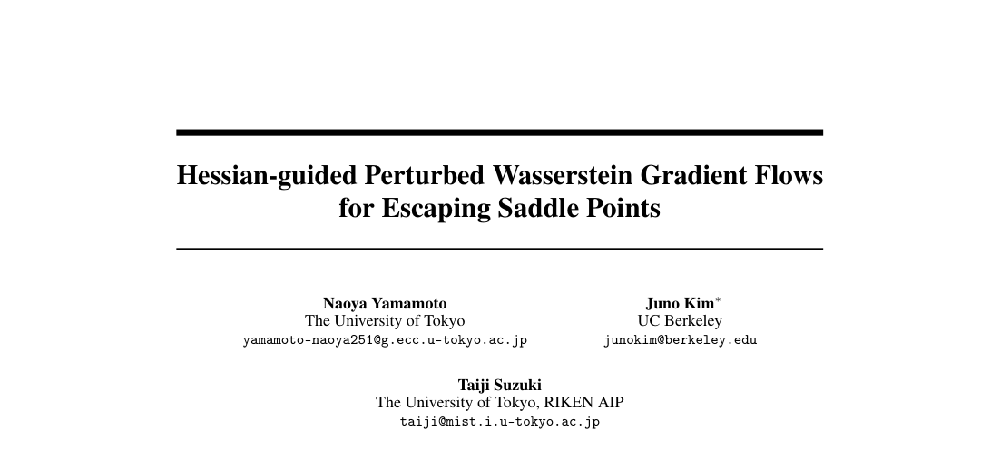
一次資料・取得元 · pdf-header · 2026-10-06T11:50:38.729248+00:00
SHA-256 f2cf1f236cf7377a9191ee9f92767029ab0789ae54c9464b8e9c68f4c0600a3a